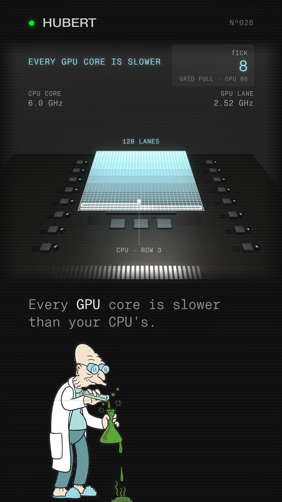

You commented CORES — this is the race card.
Every GPU core is slower than your CPU's. It still wins.
An Intel Core i9-14900K CPU core boosts to 6.0 GHz. A GPU lane on a GeForce RTX 4090, what Nvidia calls a CUDA core, boosts to 2.52 GHz — slower, on paper, every time. Race them on a matrix multiply, the operation behind most of a language model's arithmetic, and the slower lane wins. The reason isn't speed. Every output cell of a matrix multiply is one row times one column, multiplied pair by pair and added up, and it needs no other cell's answer. So the job splits into thousands of independent little sums, and how many workers you have matters more than how fast any one of them is.
Companion to the reel · Watch it on @huberttheinventor

| Tick | Wall (128 lanes), cells filled | CPU cursor, cells filled |
|---|---|---|
| 1 | 128 | 10 |
| 2 | 256 | 20 |
| 3 | 384 | 30 |
| 4 | 512 | 40 |
| 5 | 640 | 50 |
| 6 | 768 | 60 |
| 7 | 896 | 70 |
| 8 | 1,024 — grid full | 80 — row 3, cell 16 |
Left alone, the CPU core's cursor would finish the whole 1,024-cell grid at tick 102.4. The wall of 128 lanes finishes at tick 8, each lane taking one cell a tick, all 128 at once (matches SCRIPT.md exactly).
Nº001 · What a lane is
Nvidia calls each lane a core
One lane is a small thing: it does one multiply and one add at a time, nothing more. A GeForce RTX 4090 packs 16,384 of them, boosting to 2.52 GHz. The fastest core on an Intel Core i9-14900K reaches 6.0 GHz — more than double, on the one number that compares directly. The race isn't run on that number. It's run on how many small things you have.
“The GPU is specialized for highly parallel computations and therefore designed such that more transistors are devoted to data processing rather than data caching and flow control.”
NVIDIA CUDA C++ Programming Guide 12.4, §1.1
Sourced: nvidia.com, GeForce RTX 4090 specifications (NVIDIA CUDA Cores 16384, Boost Clock 2.52 GHz) · Intel ARK, Core i9-14900K specifications (Max Turbo Frequency 6.00 GHz, Thermal Velocity Boost, one P-core).
Nº002 · Why it wins
Independent sums, and a model that's mostly grids
Open up one cell of the output grid: take a row, take a column, multiply the pairs, add them up. That's the cell — and it needed no other cell. A thousand-cell grid is a thousand of those, each its own little sum, none waiting on any other. Give the job enough hands and every cell happens in the same instant. That's what the wall of lanes is: hands.
It's also most of what a language model actually computes. One study counted the training arithmetic of BERT, a transformer, operation by operation:
| Operation | Share of arithmetic | Share of runtime |
|---|---|---|
| Tensor contractions (matrix multiplies) | 99.80% | 61.0% |
| Statistical normalization | 0.17% | 25.5% |
| Element-wise operations | 0.03% | 13.5% |
Over 99% of the arithmetic, in one study, on one model, in training — not 99% of the time (the same table puts matrix multiplies at 61.0% of runtime; the other 39% is memory movement and smaller operations, which this page doesn't cover). A nearly-all-grids job is exactly the shape the card was built for.
Nº003 · Where it loses
A running total is a chain
The trick only works when the pieces don't wait on each other. Clear the grid to a single running total — step 2 needs step 1's answer before it can add anything — and the wall stalls: one lane works, the other 127 sit idle, waiting their turn on a chain that can only move one link at a time. On that job, the fast core wins outright. The race in this guide is never claimed to run in one direction only.
Nº004 · The honest scope
What this card does and doesn't claim
The toy race is a toy. Ten cells a tick for the CPU cursor is a ratio picked to be readable on screen, not derived from the two clock numbers and not a benchmark of any real hardware — a real CPU core also does more than one multiply-add per clock, so no real speed ratio is claimed either way. The 99% figure is BERT training arithmetic, from one study — not a measurement across every model, and not a claim about runtime. “Most of a language model's arithmetic” is the weaker, general claim the same BERT figure and Kaplan et al.'s compute-counting (“Scaling Laws for Neural Language Models,” 2020) support for transformers in general. No H100 clock figure appears anywhere on this page. Nvidia's own H100 whitepaper lists its boost clock as “Not Finalized,” so it isn't a sourceable number.
This page also never calls a data-centre chip a graphics card. The only card it names is a gaming card, the RTX 4090, which is one. Nvidia's own architecture whitepaper is explicit about the chip that actually trains most large models today:
“The H100 GPUs are primarily built for executing datacenter and edge compute workloads for AI, HPC, and data analytics, but not graphics processing. Only two TPCs in both the SXM5 and PCIe H100 GPUs are graphics-capable.”
NVIDIA H100 Tensor Core GPU Architecture whitepaper, V1.01
Nothing here is said about memory, caching, or the prefill/decode split in serving a model — a different guide's job.
One system, taken apart.
Same treatment, different machine. No pitch, no thread-bait, and an unsubscribe link that works.
Take it with you
The race card is this page: the finished race at tick 8, both clock readouts, the tick-by-tick table, and the one case where the fast core wins, free, no email.
The List
One a week. And the other seven, now.
Confirm your address and the whole set arrives — all ten field guides, exactly as they are on the site, nothing held back for subscribers. After that, one new system taken apart every week. No pitch, no thread-bait, and an unsubscribe link that works.